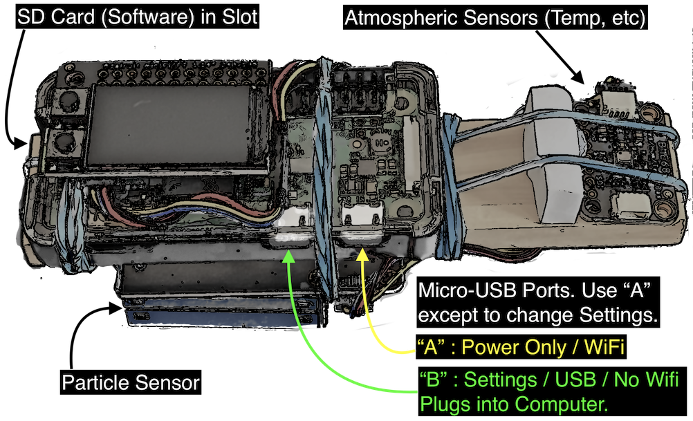

Use the “A” USB port for normal operation. Any USB cable that fits will power the device from this port. You can plug it into any USB port (computer, car, phone battery, usb wall charger) to power the device.
Use the “B” USB port to change the settings. Make sure to use a proper USB Data Cable so the device can talk to the computer. Cables that recharge portable or bicycle lights are typically power only so those won't work but will power the device just like port “A”.
When attached you will see the “AQI Gadget” disk drive on your computer.
Open the README.html file to navigate to settings, the manual, or see the current AQI.
You can change WiFi settings, the country you're in (as long as its the US or India) and the temperature units.
It can take up to one minute for the device to start working after you plug it in.
To power off the device simply unplug it. When using port “B” your computer might want you to eject the disk drive first.
It takes up to 10 minutes or so for the device to become accurate. Before that time readings will be less accurate and may vary.
The display can show you various readings but most importantly it will show you the current AQI for the country in settings. For the US this is the US EPA Air Quality Index. For India it is the Indian National Air Quality Index.
The upper button will switch between display modes. The default display modes are:
AQI
2x2 display of AQI, Temperature (Celcius or Farenheit), Relative Humidity (Percentage), and Particle Concentration.
2x2 display of Gadet hostname, IP address, AQI Index Name, Particle Calibration.
The display will turn itself off after a certain amount of time. You can turn it on again by pressing one of the buttons.
When using port “A” to power the device, WiFi is active, and the device is set up with the network and password, you can visit its website at the URL: http://aqi-gadget-XXX.local — where XXX is the serial number of your device (for example 001). You can see the device name on its display. Alternately you can use its IP address directly (also indicated on the display) such as: http://192.168.0.232 for example.
When port “B” is used you can get to the website using either http://aqi-gadget-XXX.local as above or with the exact address which is: http://10.10.10.1. That address is hard coded and will not change. You can only access the device via the computer its plugged into when using port “B”.
The web interface is best viewed on a phone or tablet when not in landscape mode but it also works from a computer's web browser.
Testing interior and/or exterior air quality during wild fires.
Get a baseline for polution in your house or car.
Determine the efficacy of your car's air filter. (It probably sucks during a wild fire.)
Find our when you need to turn on/off your house air filtere.
Find our which rooms in your house have the best air quality. This can change dramatically during a wild fire.
I've tried to make this thing as accurate as possible but there are no guarantees. You can test it against other AQI monitors on the internet like <hlink| https://www.purpleair.com|> to guage its accuracy in your area. In the case of purple air: set reporting for “US EPA PM2.5 AQI” and “US EPA” for wood smoke or “None” for non-wood smoke (this applies in the US only).
The most fragile parts of the device are the particle sensor (the blue box on the bottom) and the SD Card. The most likely failure will be the particle sensor. Either way if you want it fixed just contact me. You can tell the particle sensor is wigging out if the AQI readings start dramatically fluctuating for no good reason consistantly. Occasionally it will fluctuate because something happened to it like a nat or very tiny spider went in there. Try blowing hard on its fan to see if you can dislodge any beastie which may have taken up residence.
The particle sensor is designed to detect PM2.5 particles or smaller (2.5 micometers). These are the most important particle sizes for pollution and wood smoke. It will extrapolate to particles up to PM10 (10 micrometers) but I don't believe its accurate for that range. PM10 particles are reported on the total particle count page of the website and on the graph.
If your finger covers the particle sensor fan or touches it and it stops: just move your finger and forget about it.
The AQI Gadget is a Raspberry Pi Zero W connected to two main components from Adafruit. All of the software is available at my github repo. Links to the particle sensor and BME680 (environment sensors) are available there as well.
Your AQI Gadget is constructed of the finest Blu Tac (basically playdoh) and rubber bands that you can find on Amazon. The wood is from some game that we lost most of the pieces to. The reason the small PCB is located at the end of the wood stick and buffered by some styrofoam is to insulate it against heat and infrared radiation from the Raspberry Pi Zero.
The product design probably makes Steve Jobs very sad in whatever plane of existence he currently inhabits and I'm sorry about that.
If it falls apart just use more rubber bands and/or Blue Tac or tell me and I'll gladly come over with some super glue.
SSH is enabled on the device. You can login to the gadget from your computer like so:
ssh pi@aqi-gadget-XXX.local
where XXX indicates your serial number. Alternately you can substitute in the IP address directly. When attached to port “B” the IP address is always 10.10.10.1. In WiFi mode you should find the IP address on the display or use your router's Wifi clients list.
The password is “raspberry”. If you are worried about the NSA getting into your device change the password. It won't help but you'll feel better. (Note: you have to switch to read-write mode before doing so).
The device is in read-only mode. In the pi user's shell you can type rw to change into read-write mode and ro to change back to read-only. Always reset to read-only mode before unplugging the device. Read-only mode prevents requiring a “clean shutdown” of the raspberry pi.
One fun thing you can do is just take it apart, remove the garbage that holds it together and replace it with something reasonable.
Of all the crap I've made this is one of the few that Rosa actively complimented me on and used frequently. Hopefully you get some good use out of it.